A Guide to the styles.cmac Package
intro-to-package.RmdOverview
The styles.cmac package provides a suite of functions
for color styling in ggplot2, with an emphasis on branding
for CMAC. Notably, it includes a palette that is adapted from the
Tableau 10 Palette. This package is designed to streamline the usage of
color palettes, with inspiration drawn from the Tableau 10 Palette.
For a deeper dive into the package’s colorblind-friendly design, visit the fill palette and color (line) palette URLs provided below. This gives an overview of what the palette looks like as a whole.
See colorblind statistics for the fill palette and the color (line) palette
Installation
If you want to use the latest version of styles.cmac
from GitHub, ensure that you have the devtools package installed, and
then use devtools::install_github() to download and install
styles.cmac.
# If devtools is not installed
if (!require("devtools")) install.packages("devtools")
# Install styles.cmac from GitHub
devtools::install_github("CN-CMAC/styles.cmac")Examples
Adjusting color Aesthetic
Let’s dive into some examples of how to use styles.cmac in
conjunction with ggplot2. First, we will create a basic
plot using ggplot2, without any CMAC styling.
library(ggplot2)
# Create a basic plot structure
basePlot <- ggplot(data = mtcars,
aes(x = wt,
shape = as.factor(cyl),
color = as.factor(cyl),
y = mpg
)
) +
geom_point(size = 5)
basePlot # Display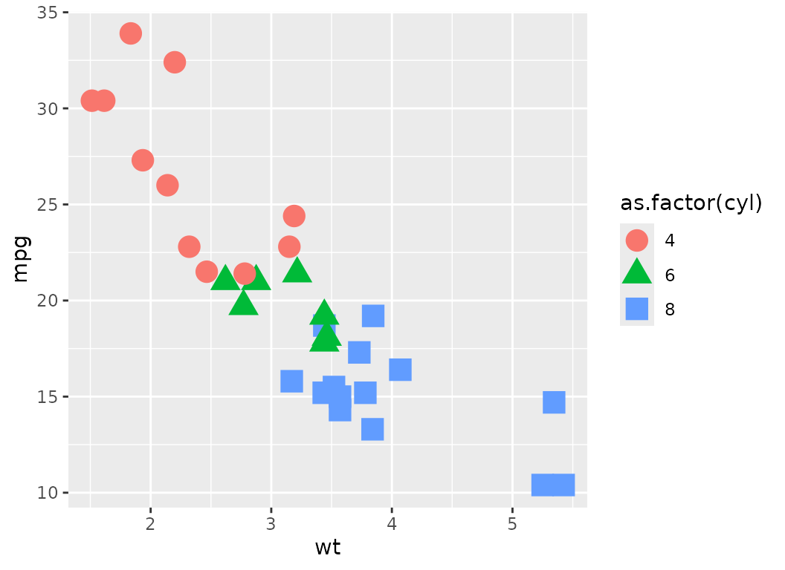
Now, let’s look at how we can use the CMAC color palette and theme with our base plot.
basePlot +
# Use the CMAC color palette
scale_color_cmac() +
# Get the CMAC ggplot theme
theme_cmac()This plot now properly leverages the CMAC brand.
Other Options with color Aesthetic
Here are some other useful examples that demonstrate some of the function’s flexibility.
# Use the accent color palette instead of the fill
# This would be beneficial if you need to use the fill colors instead of the accent colors.
basePlot + scale_color_cmac(overrideWithFill = TRUE) + theme_cmac()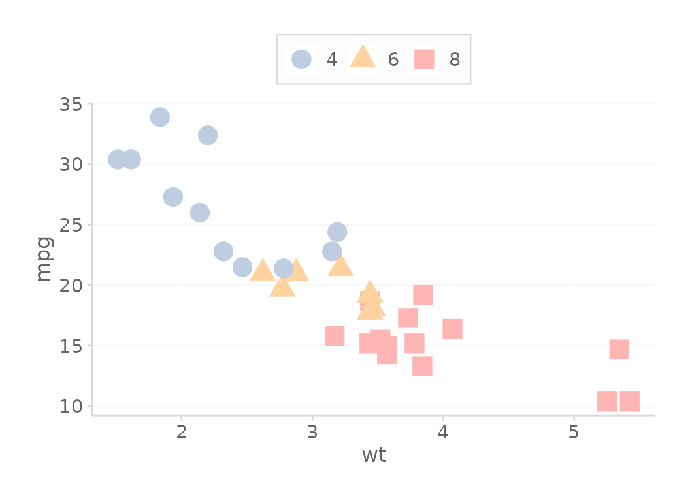
# Add the fill color and turn off legend with optional parameter
# You can use any parameter supplied through ggplot2::scale_fill_manual()
basePlot + scale_color_cmac(guide = 'none') + theme_cmac()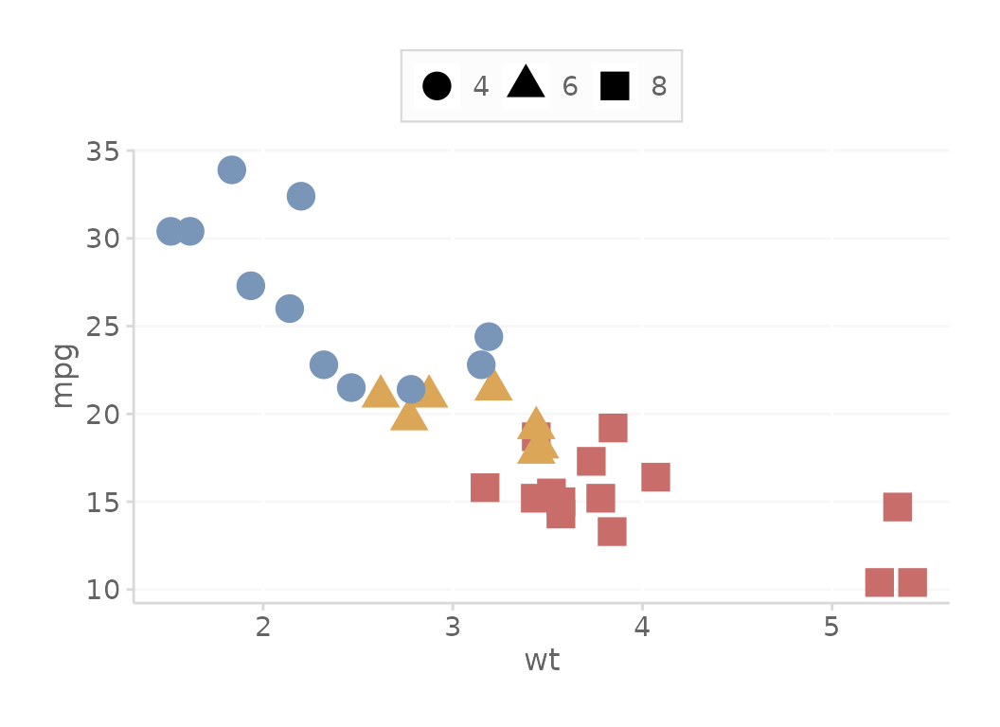
# You could also change the theme through the optional parameters
# Add the theme with additional optional theme parameters
basePlot + scale_color_cmac() + theme_cmac(legend.position = 'right')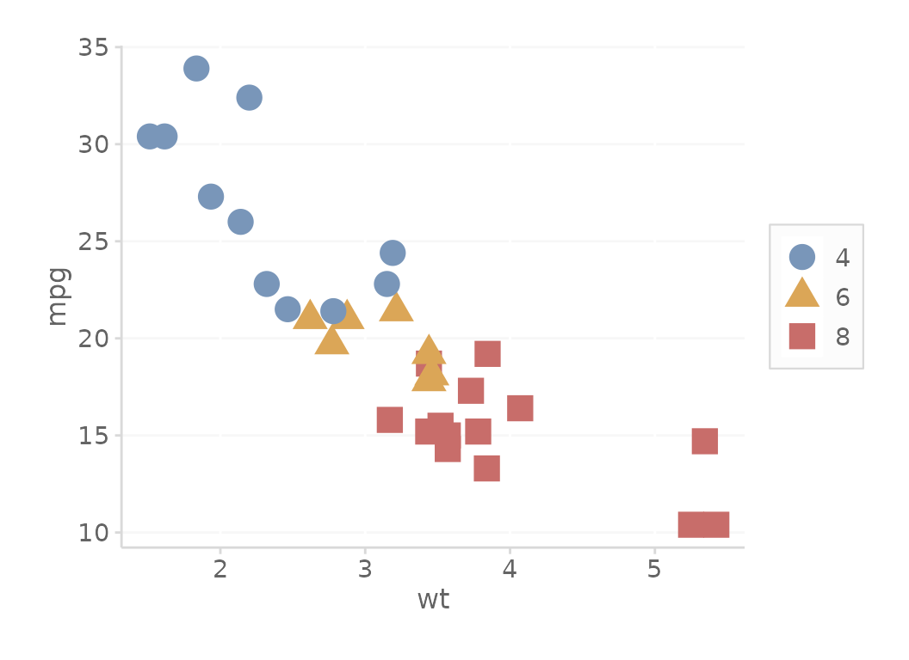
Additional parameter called borderMode controls the
theme borders. Inspiration
for facets came from 1.2.2 in this book.
# One other option is to remove the border when faceting
# Note this example is only for demonstrating the borders. Faceting in
# this context is another issue in itself.
basePlot + scale_color_cmac() + theme_cmac(borderMode = 'facet') +
facet_grid(~as.factor(cyl))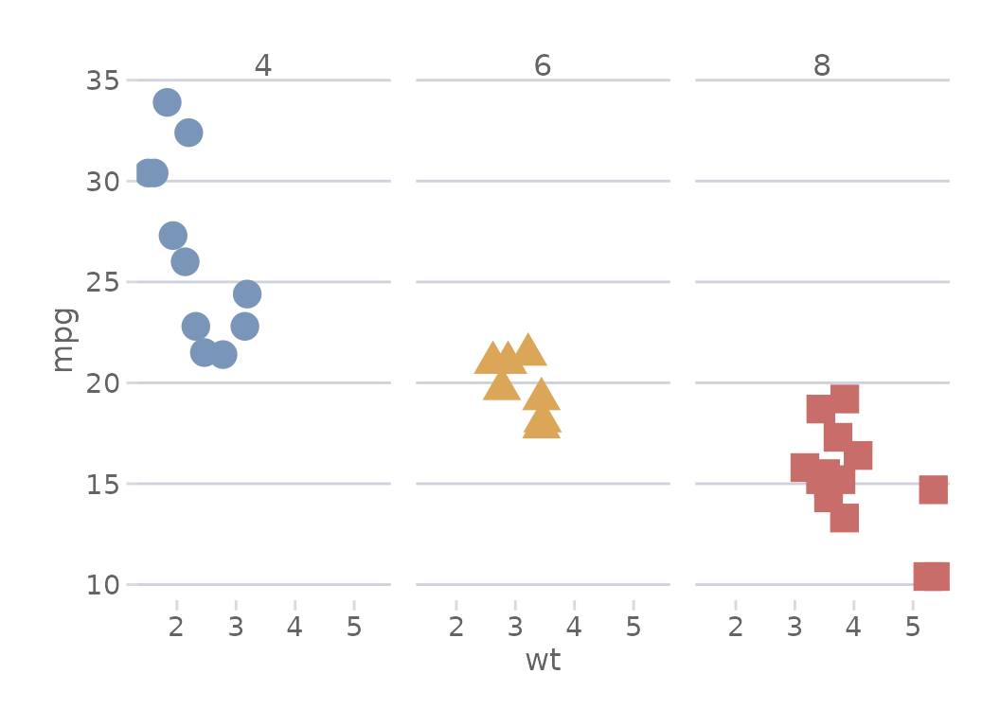
# Note you can also use 'borders' to add all border back.
basePlot + scale_color_cmac() + theme_cmac(borderMode = 'borders')
Use only 1 color
Most of the time you only need one color. Here is an example of how you might get that.
basePlot +
# Use only a single color (note using line palette)
geom_point(color = scale_cmac('blue', 'blue2'),
size = 5) +
# Get the CMAC ggplot theme
theme_cmac()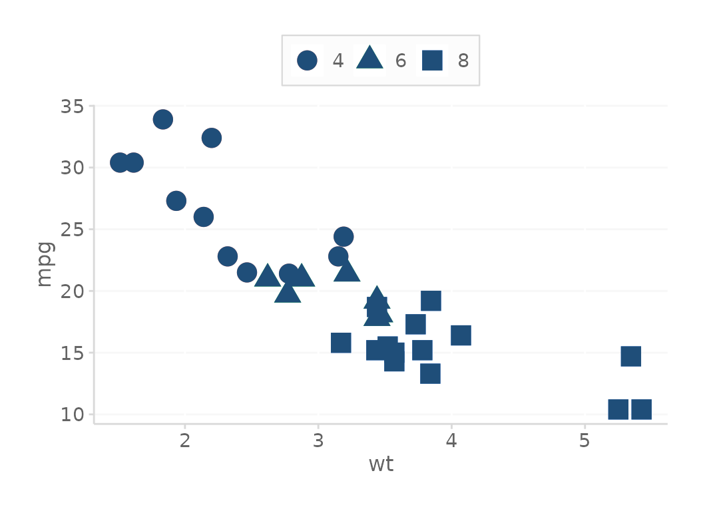
Adjusting fill Aesthetic
Here are some examples of how you could use the fill colors in plots.
Create a Base plot
# Create basic ggplot object
ggplotObject <- ggplot(mtcars, aes(y = mpg, x = as.factor(cyl),
fill = as.factor(cyl), color = as.factor(cyl))) +
# Note that gray border used for demonstration. Please use scale_color_cmac()
# as much as possible
geom_boxplot(size = 0.8)Here is the main combination that you might use.
# Add the fill and color
ggplotObject + scale_fill_cmac() + scale_color_cmac()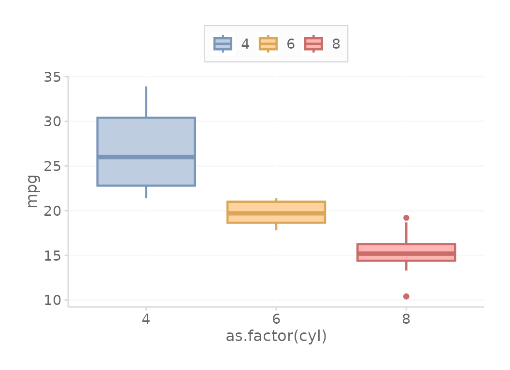
Below shows more options that demonstates some of the function’s flexibility.
# Create basic ggplot object
ggplotObject2 <- ggplot(mtcars, aes(y = mpg, x = as.factor(cyl), fill = as.factor(cyl))) +
# Note that gray border used for demonstration. Please use scale_color_cmac()
# as much as possible
geom_boxplot(size = 0.8, color = scale_cmac('gray', 'gray3'))
# Add the accent color
ggplotObject2 + scale_fill_cmac(overrideWithAccent = TRUE)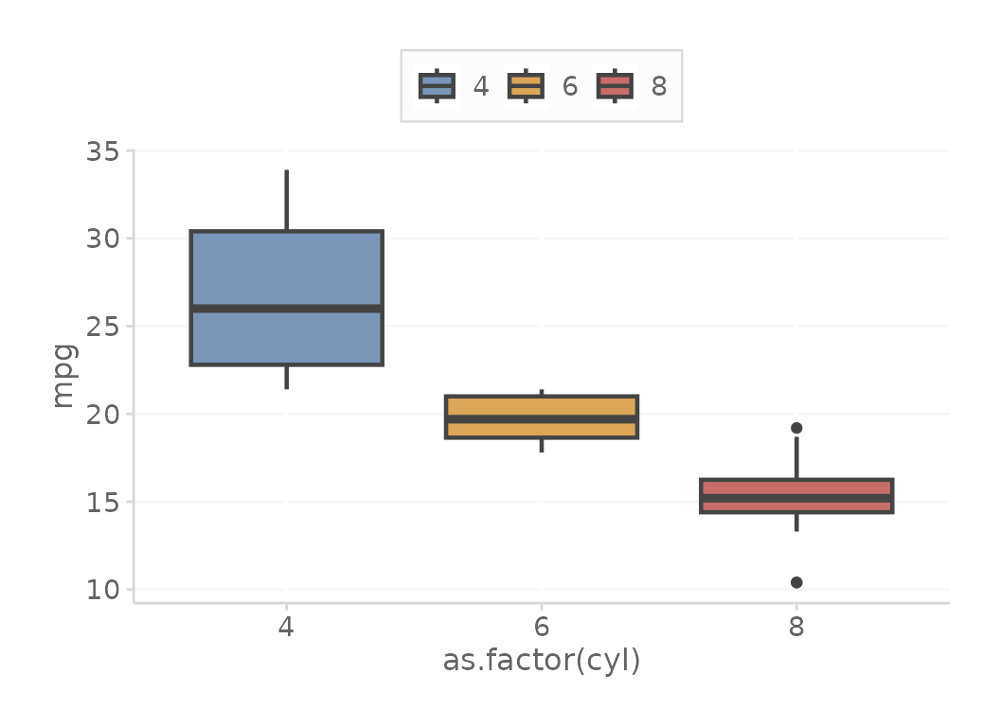
# Add the fill color and turn off legend with optional parameter
ggplotObject2 + scale_fill_cmac(guide = 'none')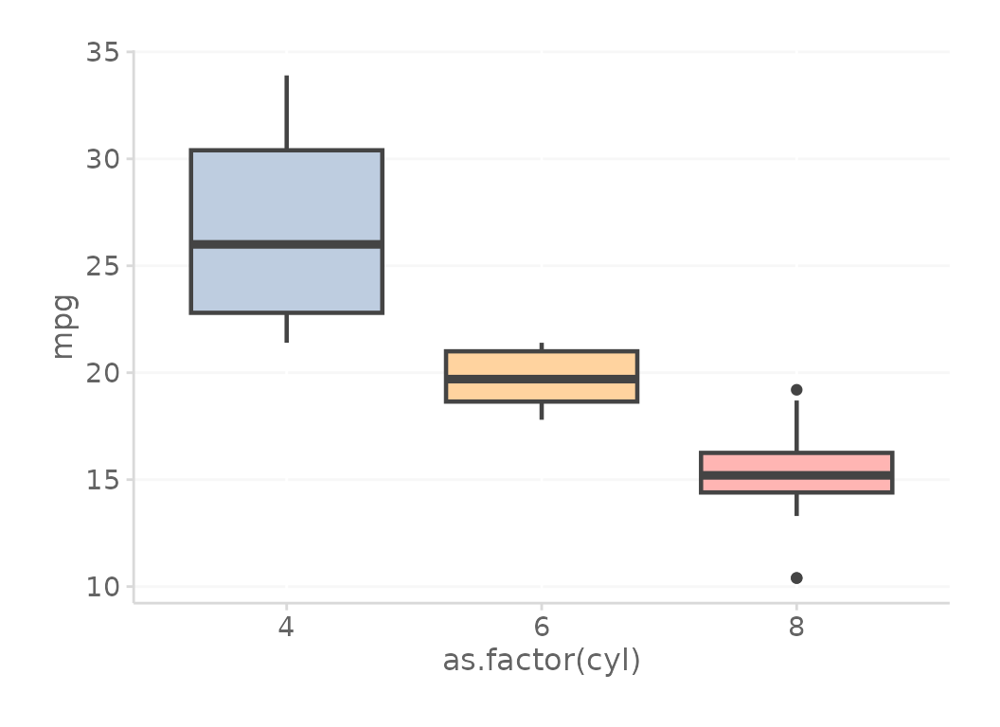
How to use Times New Roman
Use this setting for non-website reporting, i.e., PDF distribution.
Non-Label Font Control
basePlot +
# Use the CMAC color palette
scale_color_cmac() +
# Get the CMAC ggplot theme
theme_cmac(inTimesNewRoman = TRUE)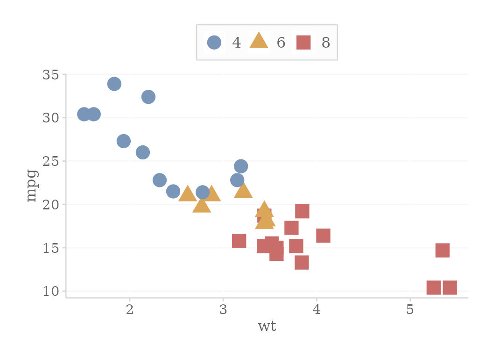
Label Font Control
basePlot +
geom_text(aes(label = paste(mpg)),
vjust = 1.2, hjust = -0.2,
size = 3.5,
# ** IMPORTANT: theme() does not control text labels
# Need to set family to this font!
family = styles.cmac::getTimesNewRomanFamily()
) +
# This controls all non-label fonts
theme_cmac(inTimesNewRoman = TRUE)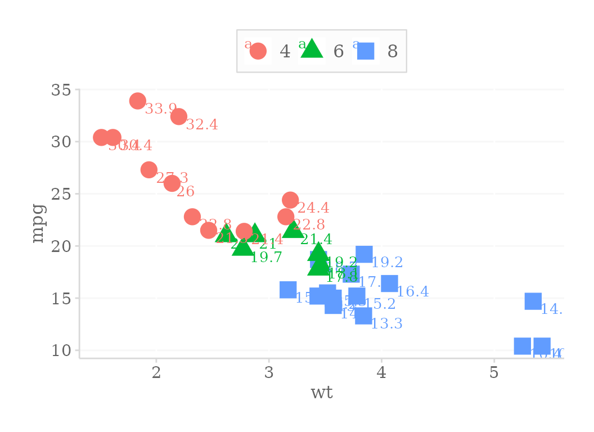
Darken Text when Over Filled Elements
ggplot(mtcars, aes(y = mpg, x = wt, color = as.factor(cyl))) +
geom_point(aes(fill = as.factor(cyl)),
size = 10,
pch = 21,
color = 'transparent',
alpha = 0.9
) +
geom_text(aes(label = round(mpg, 0))) +
scale_fill_cmac() +
# KEY - darken the text so that it is easier to view
# Over fill
scale_color_cmac(darkenPaletteForTextGeoms = TRUE) +
theme_cmac()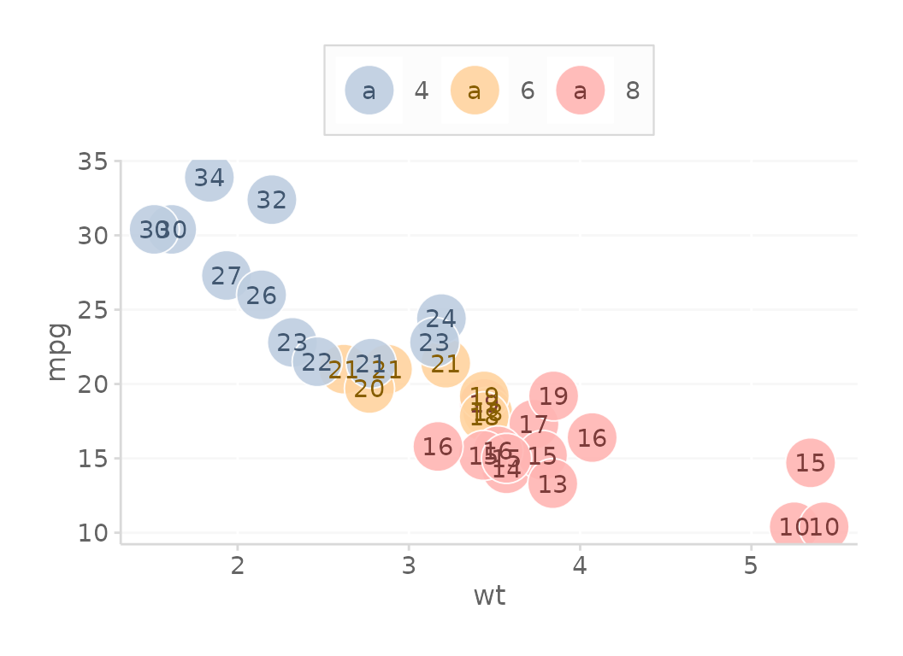
Offset or Reverse Order of Colors
# Offset the colors by 1
basePlot + scale_color_cmac(colorOffset = 1)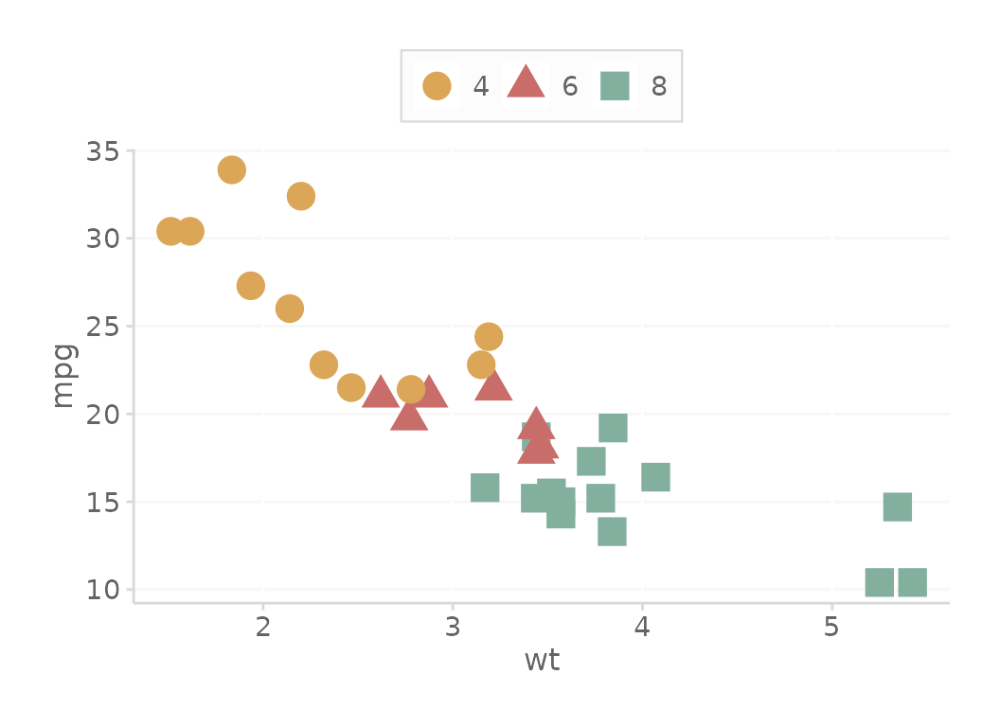
# reverse the order of the palette
basePlot + scale_color_cmac(reverseOrder = TRUE)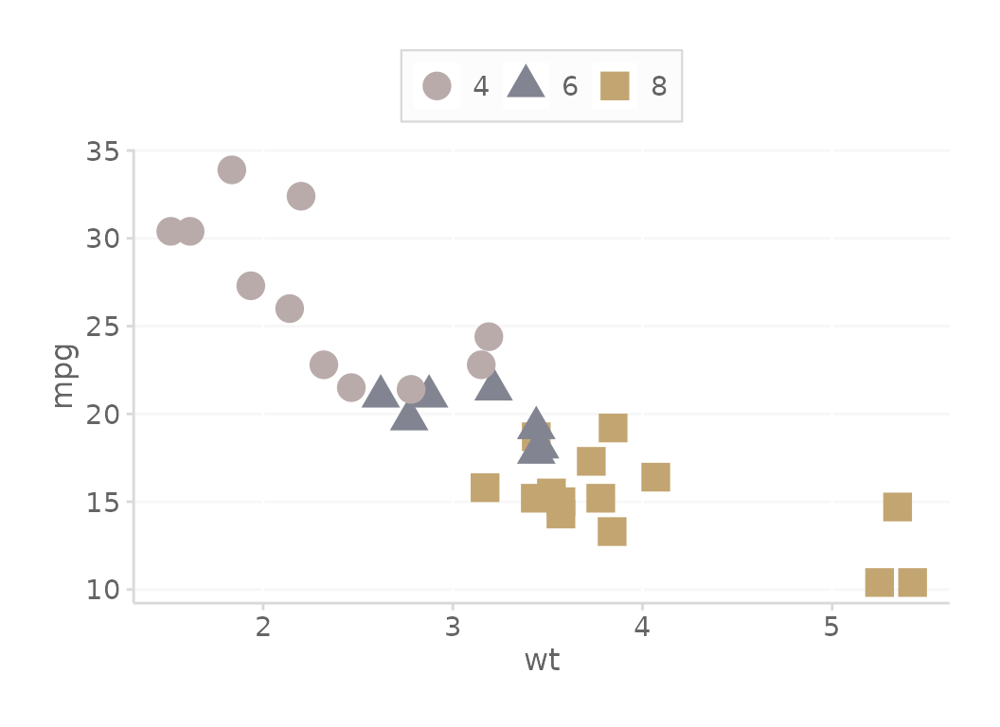
Override the palette with a color blind palette
# Use color blind friendly palette (works with fill too)
basePlot + scale_color_cmac(useColorBlindPalette = TRUE)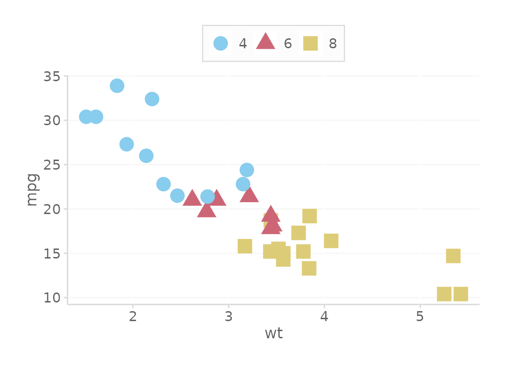
# Change the palette (can use cols4all::c4a_palettes() to try others)
# Also, can demo others in GUI using cols4all::c4a()
basePlot + scale_color_cmac(useColorBlindPalette = TRUE,
colorBlindPaletteName = 'color_blind')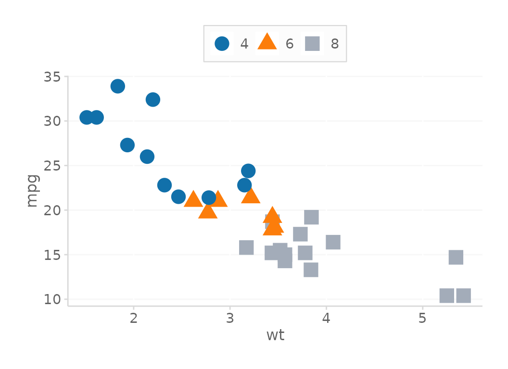
Numeric Formats
Mainly for quick financial axis formatting
kDollarsFormat(1000, scaleUnit = 'K')
#> [1] "$1 K"
kDollarsFormat(1000000, scaleUnit = 'M')
#> [1] "$1 MM"
kDollarsFormat(1000000, scaleUnit = 'MM')
#> [1] "$1 MM"
kDollarsFormat(1000000000, scaleUnit = 'B')
#> [1] "$1 B"
kDollarsFormat(1500000000000, scaleUnit = 'T')
#> [1] "$1.50 T"
kDollarsFormat(1000000, scaleUnit = 'M', useDollarSign = FALSE)
#> [1] "1 MM"Here are some examples of how you would commonly integrate them into
ggplot2
df <- mtcars
df$mpg <- df$mpg*1000000
# Create simple ggplot, no data shown by default
gg <- df |>
ggplot(aes(y = mpg, x = wt)) +
theme_cmac()
# Text labels millions dollars
gg + geom_text(aes(label = kDollarsFormat(mpg)))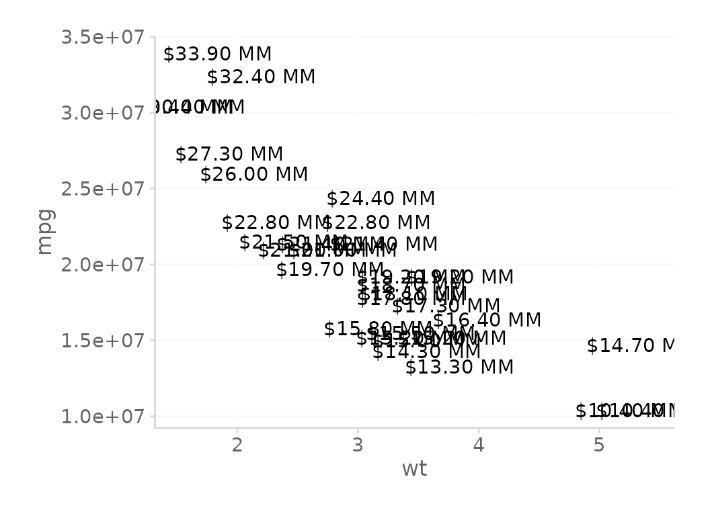
# y-axis format, using function defaults
gg + scale_y_continuous(labels = kDollarsFormat)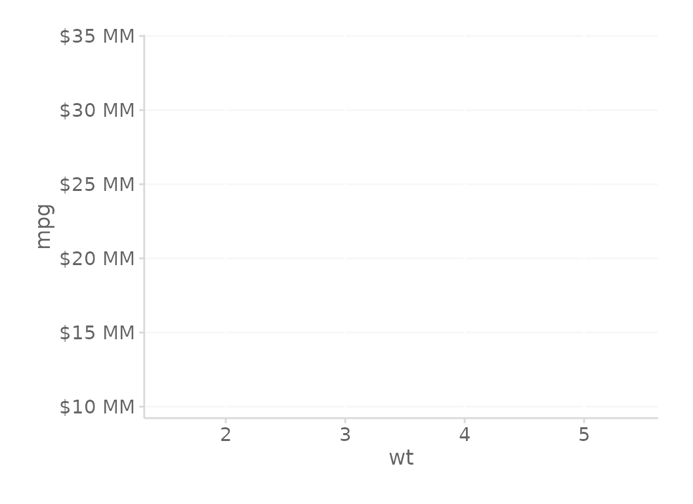
# y-axis format in *thousands* of dollars
gg + scale_y_continuous(labels = ~kDollarsFormat(., scaleUnit = 'K'))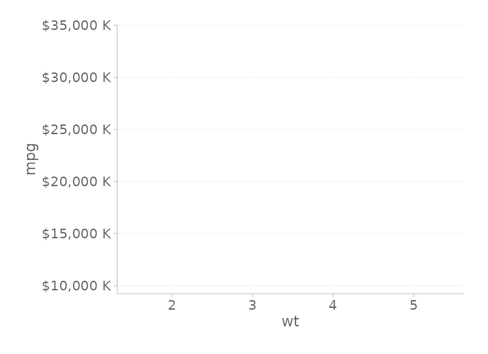
# y-axis format with no decimals
gg + scale_y_continuous(labels = ~kDollarsFormat(., roundToDigit = 0))
# y-axis format with no dollar sign
gg + scale_y_continuous(labels = ~kDollarsFormat(., useDollarSign = F))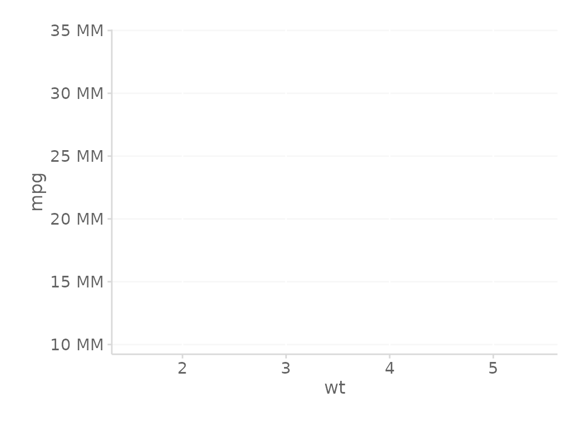
Colors Deep Dive
This section take a closer look at the colors that are available to
us in the styles.cmac package.
What Colors are Available?
Notice displayNames = TRUE, which show you what hex
codes are associated with the color names.
Default is displayNames = FALSE for best functionality
with plotting.
# Fill colors
scale_cmac('fill', displayNames = TRUE)
#> blue orange red green purple yellow gray purple1
#> "#BECDE0" "#FFD39F" "#FFB5B3" "#B4DFCE" "#CDC9E0" "#F2D4A0" "#C3C6D2" "#E6D7D7"
# Line colors
scale_cmac('color', displayNames = TRUE)
#> blue orange red green purple yellow gray purple1
#> "#7996b9" "#dba657" "#c86d6a" "#83af9e" "#928ea4" "#c2a570" "#828591" "#baabab"
# Blue and Gray colors, like the background of slide decks
scale_cmac('blue', displayNames = TRUE)
#> blue1 blue2 blue3 blue4
#> "#183C5C" "#1F4E79" "#91AACB" "#BECDE0"
scale_cmac('gray', displayNames = TRUE)
#> white gray10 gray9 gray8 gray7 gray6 gray5 gray4
#> "#FFFFFF" "#FAFAFA" "#F1F1F1" "#EAEAEA" "#D9D9D9" "#CFCECE" "#A6A6A6" "#646464"
#> gray3 gray2 gray1
#> "#444444" "#363636" "#222222"
# Text, Grays, and Blues
scale_cmac('text') # Text (dark gray)
#> [1] "#646464"
scale_cmac('blue') # Grays that are in the brand
#> [1] "#183C5C" "#1F4E79" "#91AACB" "#BECDE0"
scale_cmac('gray') # Blues that are in the brand
#> [1] "#FFFFFF" "#FAFAFA" "#F1F1F1" "#EAEAEA" "#D9D9D9" "#CFCECE" "#A6A6A6"
#> [8] "#646464" "#444444" "#363636" "#222222"How to get 1 color?
# Single color from the fill palette
scale_cmac('fill', 'red')
#> [1] "#FFB5B3"
# Single color from the base palette
scale_cmac('gray', 'gray3')
#> [1] "#444444"
# Single color from the base palette
scale_cmac('blue', 'blue2')
#> [1] "#1F4E79"How to get > 1 colors
# Get the first 3 colors in the line palette
scale_cmac('color', 3)
#> [1] "#7996b9" "#dba657" "#c86d6a"
# Get the last 3 colors in the fill palette
scale_cmac('color')[6:8]
#> [1] "#c2a570" "#828591" "#baabab"
# Or access specific colors all at once
scale_cmac('color', 'blue', 'orange', 'green', 'yellow')
#> [1] "#7996b9" "#dba657" "#83af9e" "#c2a570"